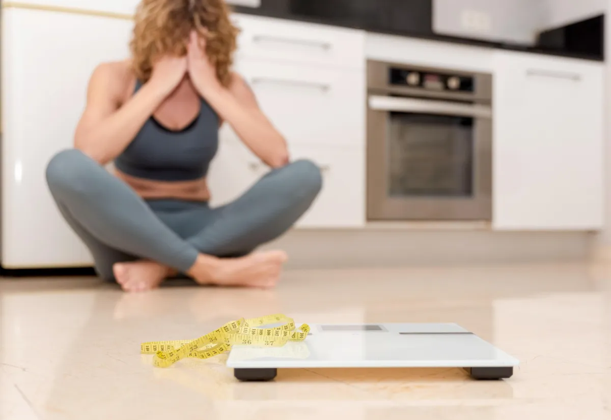
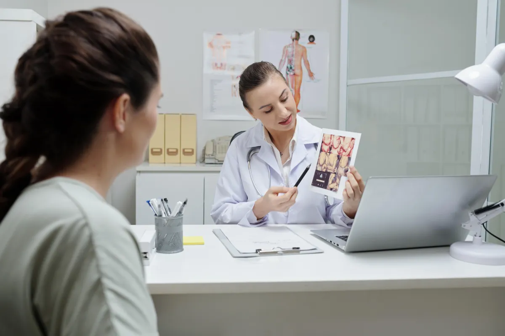
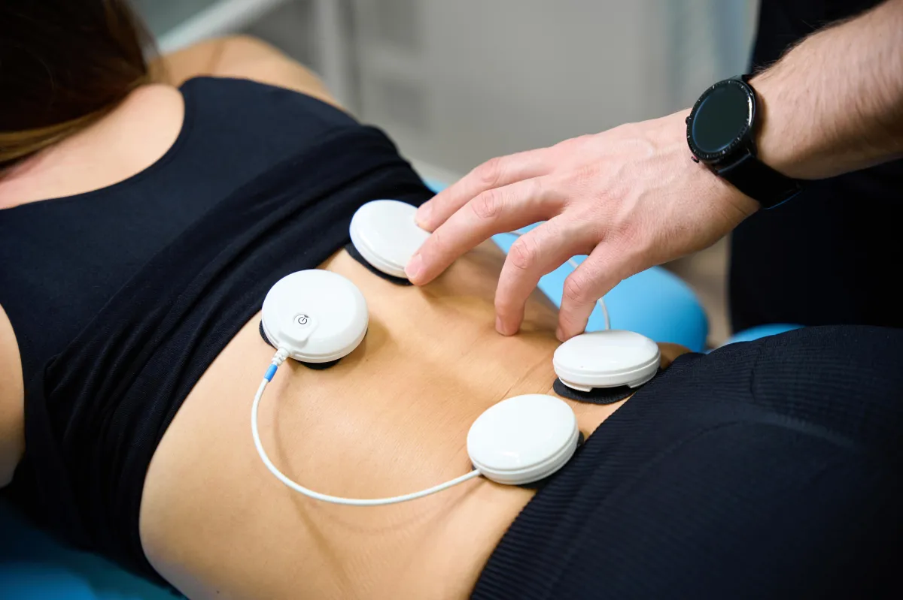
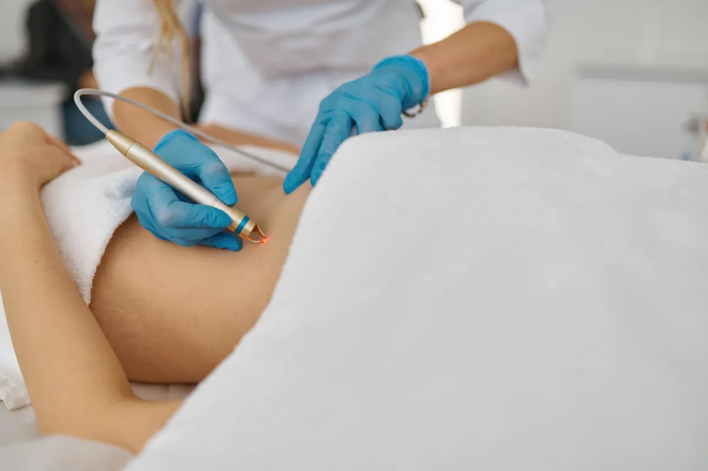

Finally! Weight Loss support that actually works.
Medication and diet review, from "where do I start" onward.
Evolve X for fat, skin and muscle, one area at a time.
Loose skin, muscle separation, scars after surgery.
Cosmetic medicine, medical skin, skin cancer checks. Same doctor.
Been here before? Book your consultation
That is the most common reason people walk in. Tell Dr Wesley where you are and he will tell you what he would look at first.
Because weight loss is not one size fits all.
If you are exhausted and fed up, you have been told to move more and eat less, you have done exactly that, and the weight still will not move, willpower is not the problem. Weight loss is often not a calories in, calories out process. When hormones are out, when insulin resistance is there, when the stress load is high or oestrogen is high, the body holds weight regardless of calories. So many perimenopausal women describe adding 15 kilos through menopause with nothing about their diet or exercise having changed. A diet sheet looks at none of it. A GP does.
Dr Wesley builds a GP-led, holistic plan from every factor at once, because he knows weight loss is not a one size fits all recipe. You are told exactly what to do, it fits your body and your life, and it is reviewed by the doctor who wrote it. You are safe here, you are cared for, and the results you have been chasing alone for far too long finally have a plan behind them.
And because he runs the body contouring and the skin side too, the whole journey stays with the same doctor.
Been here before? Book your consultation
Holistic care from the first consultation, through the medical work, to the point where the journey becomes cosmetic. The plan is built around where you are, and the same doctor carries it the whole way.

A medical look at why, then a plan that fits your life: diet review, metabolic support, and medication where it is appropriate for you.

Prescription weight management, reviewed by the doctor who prescribed it, with support alongside bariatric surgery where that is the path.

Evolve X for the stubborn areas: tummy, flanks, arms, inner thighs. Fat, skin and muscle in one session, one area at a time, done properly.

Loose skin, fat pockets, muscle separation after babies, scars after surgery. The part of the journey most clinics cannot do.
Radiofrequency warms the fat layer and tightens the skin. Electrical muscle stimulation rebuilds the muscle underneath. Six applicators, one or two areas at a time, because doing it properly beats doing it everywhere at once.
Once the weight is where you want it, the face and skin often need attention too. And because Dr Wesley is a GP as well as a cosmetic doctor, the medical and the cosmetic are looked at together.
Laxity, texture and volume changes that arrive when the weight leaves. Assessed as part of the journey.
Doctor-performed cosmetic medicine for the face. Options discussed at consultation, in line with Australian advertising rules.
Skin cancer checks and excision, acne from 18 up, pigmentation and melasma. The medical side other clinics send you elsewhere for.
Hear from Dr Wesley. Press play.
Dr Wesley Chan is a Fellow of the Royal Australian College of General Practitioners and a Medical Fellow of the Australasian College of Cosmetic Surgery and Medicine. He consults at a public hospital, lectures at the University of Queensland, and works alongside a bariatric surgeon looking after patients before and after surgery.
He set up this clinic because the weight loss journey kept getting split between people who could prescribe and people who could treat the body. He does both, and he is the same doctor at every step.
No. Book a consultation directly. If your journey involves surgery, Dr Wesley works with the surgeon.
Only if it is appropriate for you, and only after a proper medical consultation. Nothing is decided before you are seen, and nothing is advertised here.
Yes. The skin, shape and muscle afterwards are a large part of what this clinic does, and it is the part most clinics cannot offer.
Six to eight is the usual recommendation to see the initial result. Dr Wesley will tell you what is realistic for you at consultation.
Filmed between patients, as if we have just interrupted him. Short, straight answers, so you get to know how he thinks before you ever book.
What a doctor looks at first, and why it is not about trying harder.
Fat, skin and muscle in one session, and why the order matters.
Loose skin, stubborn pockets, and the options that do not involve surgery.
Muscle separation after babies, and when body contouring is appropriate.
What Dr Wesley does alongside the surgeon, at both ends.
Why the medical and the cosmetic belong in the same room.
Tell Dr Wesley where you are. You will get a text with consultation times to choose from, and the plan is built in the room.
Not sure where to start? Take the 60-second assessment first
Consultations are held at Shop 2/95 Mains Rd, Sunnybank. Individual results vary. Suitability for any treatment, including prescription medication, is decided at consultation.